Robot videos for first-frame world-model generation
162 reviewed episodes from 6 datasets, 85 shown here. Each input is a first frame, an action prompt written from the video, and the reference clip. Every input is scored on the sharpness of its upscaled conditioning frame: third-person at least 120, first-person at least 60.
72 pass · 13 exception · How the gate works · All annotations: JSONL · CSV
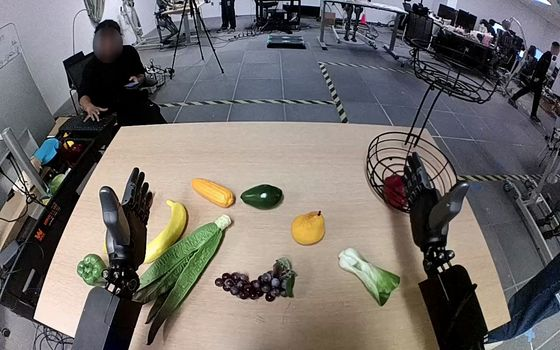
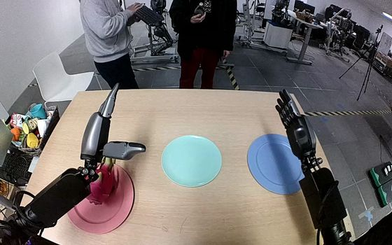
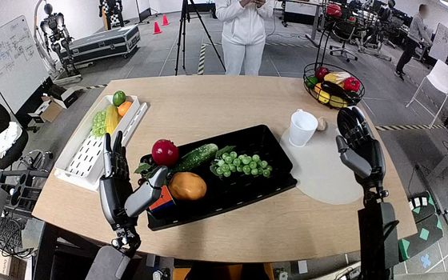
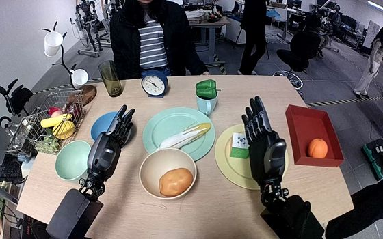
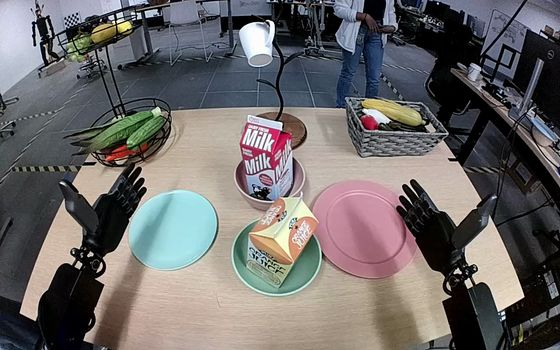
NVIDIA GR1 Fourier GR1 humanoid, dexterous hands · First-person head camera 15 of 92 episodes shown · 15 pass · CC BY 4.0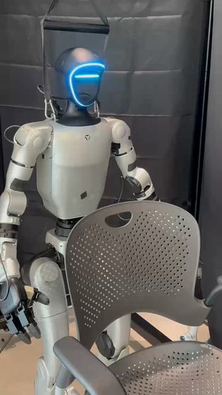
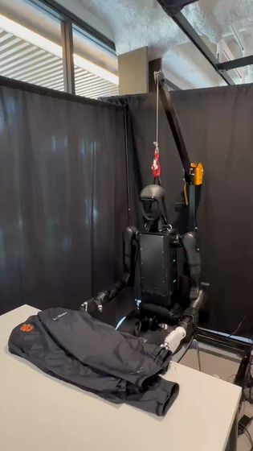
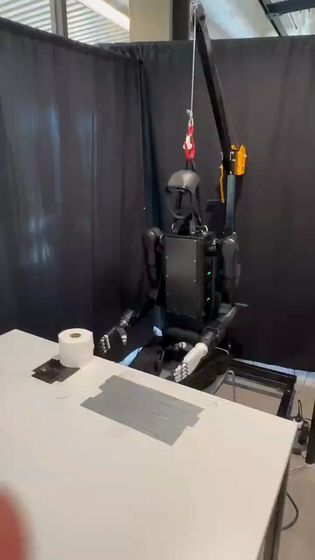
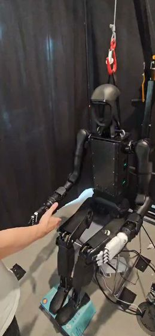
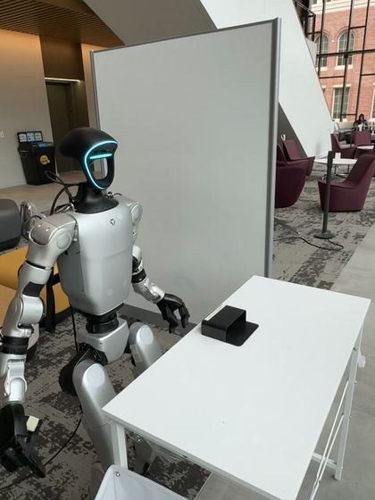
Humanoid Everyday Full-size humanoid · Third-person 26 episodes · 24 pass · 2 exception · Unclear (card: Apache-2.0; code: MIT)


 TAVP
Franka Research 3, parallel gripper · Third-person
8 episodes · 8 pass · Not stated by the publisher
TAVP
Franka Research 3, parallel gripper · Third-person
8 episodes · 8 pass · Not stated by the publisher


 ActionNet
Fourier humanoid, dexterous hands · First-person top camera
15 episodes · 15 pass · CC BY-NC-SA 4.0
ActionNet
Fourier humanoid, dexterous hands · First-person top camera
15 episodes · 15 pass · CC BY-NC-SA 4.0
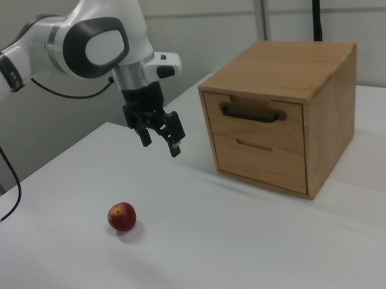
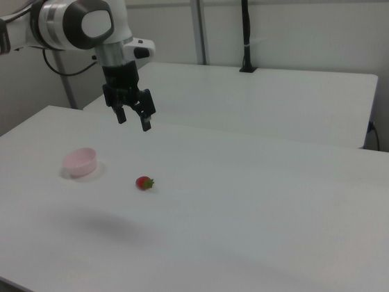
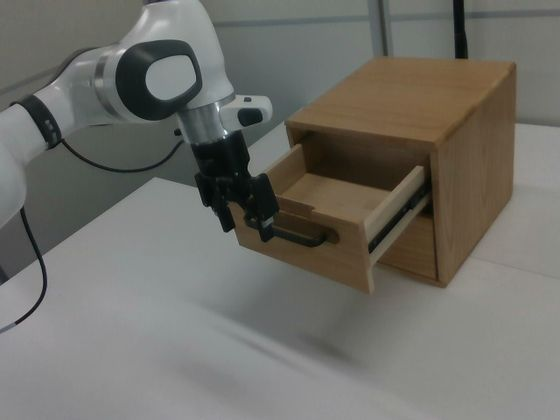
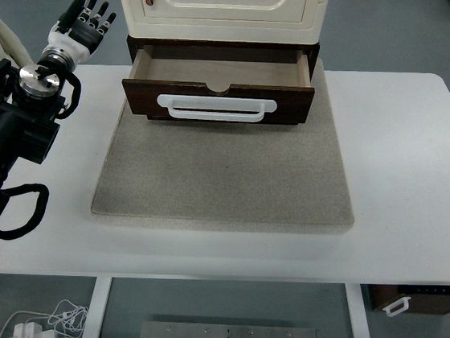
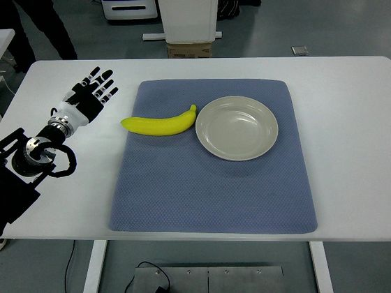
RoboMIND Franka Panda (right camera) · Tien Kung humanoid · Third- and first-person 18 episodes · 10 pass · 8 exception · Apache-2.0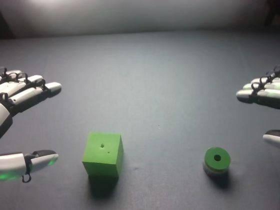
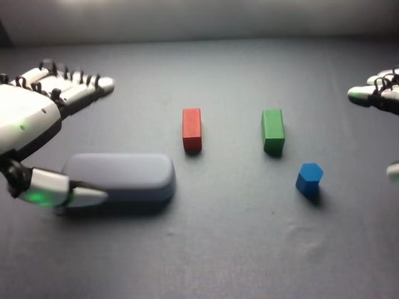
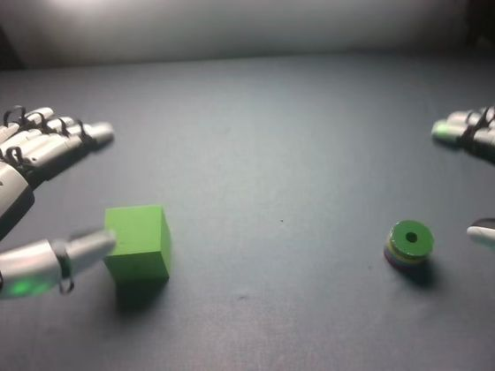
RoboCOIN · Airbot MMK2 Dual-arm Airbot MMK2, five-finger hands · First-person head camera 3 episodes · 3 exception · Apache-2.0